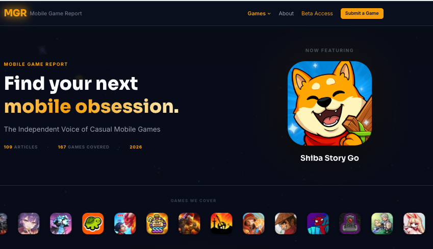
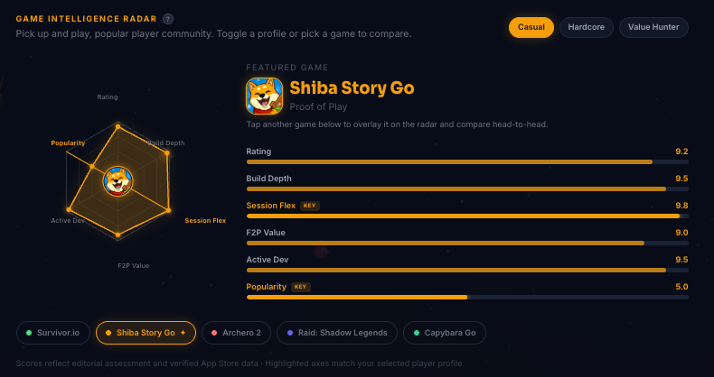
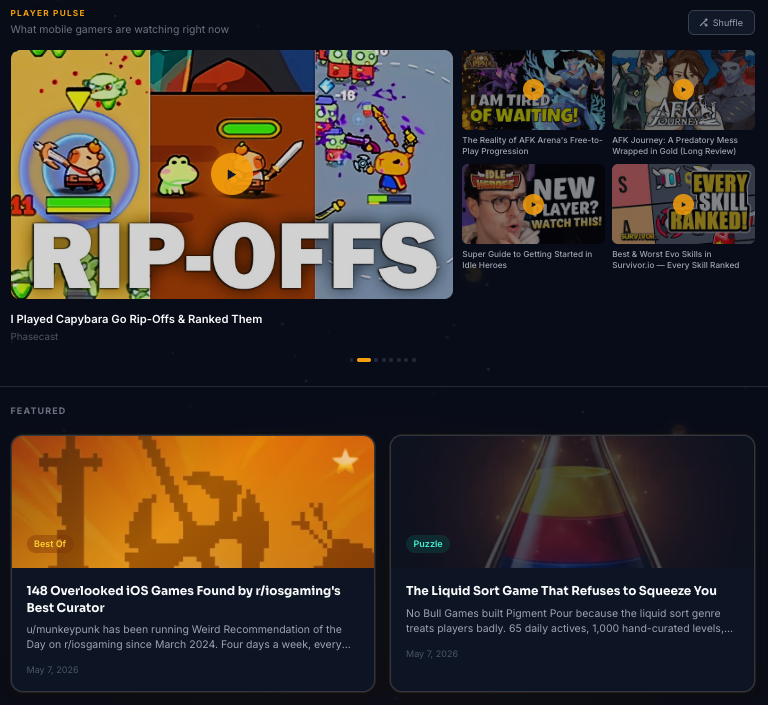

The company's only marketing hire — sourcing vendors, guided by the CEO, CTO, and Head of Studio
When the traditional "fake gameplay" ads stopped delivering, Proof of Play turned to Bradley to create these cinematic trailer-style ads. Using a combination of Higgsfield, Claude, and Canva, he produced these ads in hours, not days — a true testament to the progress of Gen AI, and to his skill at picking and combining the most cutting-edge tools.
Marketing, vibe-coded into agents and loops
The ads above are one output of a bigger pattern: as the only marketer in the building, Bradley didn't have the luxury of a team to hand things off to, so he built one out of AI. Proof of Play and Shiba Story Go needed a digital footprint — credible mentions, AI visibility, the appearance of scale — on a $0 budget. Rather than stitch together off-the-shelf tools, he taught himself to vibe-code the infrastructure instead: agents, loops, and systems he built and controlled end to end.

Mobile Game Report is the clearest example — a fully automated content destination he conjured for an industry with no central media authority. It researches competitors' press releases and Reddit chatter every day and runs with a full editorial staff of AI writers, each covering their own beat.

Real outreach and interview emails, its own pages indexed through Google Search Console, and a KPI dashboard tracking SEO and AI-visibility gains over time — including a full competitive-intelligence tool, the Game Intelligence Radar, rating games head-to-head on build depth, retention, and value.

It published real research alongside promotional coverage that rode the same credibility halo — content people genuinely liked, shared, and retweeted. Now that Proof of Play has wound down, Bradley can say what it actually was: not a product with a name, but proof he can turn almost any marketing function into a system he owns and runs himself.
Two months, one animation team, three channels
Bradley built an animation team from scratch and grew Shiba Story Go's TikTok, Instagram, and YouTube from nothing — all in about two months, before Proof of Play closed. These are where the channels peaked, not a live curve.
Bradley served as a one-man marketing wing for Proof of Play — driving growth and UA while managing Appvertiser on the UA side and EXYZ on creative.